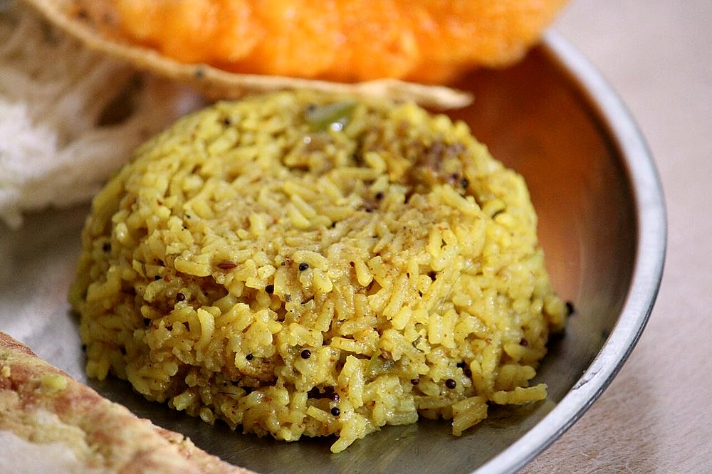

Masale Bhat
one-pot spiced rice with vegetables, goda masala spices and a slick of ghee

Contains: milk, tree nuts, sesame, mustard
Ingredients
Quantities for 4.
- 1.5 cups (300g), short-grain, washed and drained Riceambemohar if you can get it
- 3 tbsp Ghee
- 1 medium, finely sliced Onion
- 1/2 cup, shelled Peas
- 1 cup, small florets Caulifloweroptional
- 1 small, cut in 2cm dice Capsicumoptional
- 3 tbsp, grated Dried Coconutthe backbone of goda masala
- 1 tbsp Sesame
- 1 tsp Poppy Seeds
- 1 tsp, picked over Stone Flowerdagad phool, the smoky note in goda masala
- 2cm piece Cinnamon
- 4 Cloves
- 1 Bay Leafoptional
- 1 tbsp Coriander Powder
- 1 tsp Cumin Seeds
- 1 tsp Mustard Seeds
- 10 Curry Leaves
- 1/4 tsp Asafoetidause compounded-free hing to keep this gluten-free
- 1/2 tsp Turmeric
- 1 tsp Kashmiri Chillifor colour without heat
- 1 tsp Chilli Powder
- 1 tsp, grated Jaggeryrounds the masala, does not sweeten
- 3 cups, hot Water
- to taste Salt
- 12, fried in a little ghee Cashewfor garnishoptional
- 3 tbsp, fresh grated Coconutto finishoptional
- 3 tbsp, chopped Coriander Leavesoptional
Cookware
stovetop, kadhai
Checked against the ingredient list for ten allergens: milk, egg, fish, crustaceans, tree nuts, peanuts, sesame, mustard, soy and gluten. Brands vary, so read the label on anything new to you.
Before you start
- Wash the rice well ahead and let it drain in a colander for at least 20 minutes. Surface water is what makes masale bhat claggy.
- Grind the roasted masala before you light the burner. Once the tempering starts there is no time to stop.
- Cut all the vegetables to roughly the same 2cm size so they finish together.
Method
- Wash the rice through three changes of water until it runs clear, then leave it to drain 20 minutes.Well-drained rice fries rather than steams in the pan, and that is what keeps the grains separate.
- Dry-roast the dried coconut, sesame, poppy seeds, stone flower, cinnamon and cloves over low heat for 4-5 minutes, until the coconut turns one shade darker and smells nutty. Cool completely, then grind with the coriander powder to a coarse powder.Keep the heat low and the pan moving. Poppy seeds scorch in seconds and turn the whole masala bitter.
- Heat the ghee in a heavy pan. Crackle the mustard seeds, then add cumin seeds, curry leaves, bay leaf and asafoetida.
- Add the onion and fry 5 minutes, until soft and pale gold at the edges.
- Stir in the cauliflower, capsicum and peas with turmeric, kashmiri chilli and chilli powder. Cook 3 minutes so the vegetables take on the fat.
- Add the drained rice and fold gently for 3-4 minutes, until every grain is glossy and the edges look translucent.Fold with a flat spatula rather than stirring; broken grains turn the bhat sticky.
- Pour in the hot water, then add the ground masala, jaggery and salt. Taste the water. It should read slightly saltier than you want the finished rice.
- Bring to a rolling boil, cover, drop to the lowest heat and cook 12-14 minutes, until the water is gone and small steam craters appear on the surface.Do not lift the lid in the first 10 minutes. If you must check, tilt the pan instead.
- Rest covered off the heat for 10 minutes, then fork through the fresh coconut, coriander and fried cashews.
Storage
Keeps 2 days refrigerated. Reheat covered with 2 tbsp water sprinkled over, either in a pan on low or in short bursts in the microwave, and fork it through before serving.
Nutrition Medium estimate
Low protein: 10 g a serving, 7% of the calories
| Per serving400 g | Per 100 g | |
|---|---|---|
| Calories | 547 kcal | 137 kcal |
| Protein | 9.7 g | 2 g |
| Carbohydrate | 76.7 g | 19 g |
| of which sugars | 6.0 g | 2 g |
| Fibre | 7.4 g | 2 g |
| Fat | 23.6 g | 6 g |
| of which saturated | 16.2 g | 4 g |
| of which unsaturated | 6.0 g | 2 g |
Ingredients given to taste count as zero, so the real figures run a little higher. Nearest database match used for asafoetida, curry leaves, jaggery, stone flower. Estimated from raw ingredients using USDA FoodData Central.
More like this: Vegetarian Indian recipes · Gluten-free Indian recipes · Maharashtrian recipes
Times, yields, allergens and nutrition are guidance. Use your own judgement on doneness and on storing. More in About.